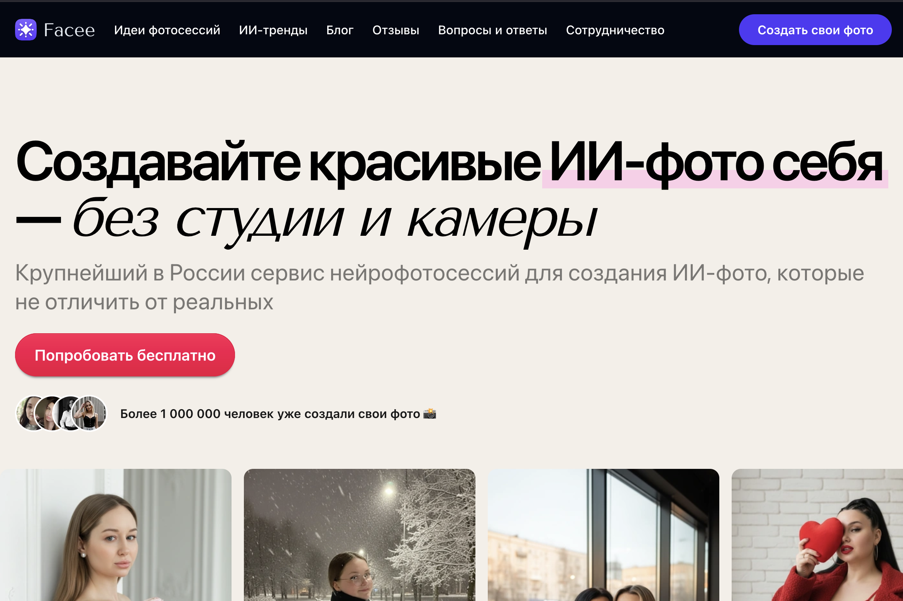
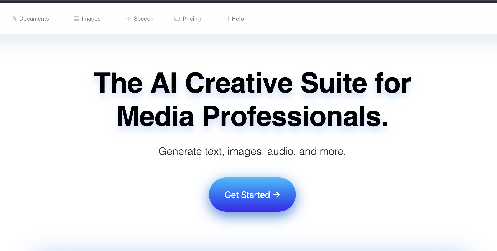
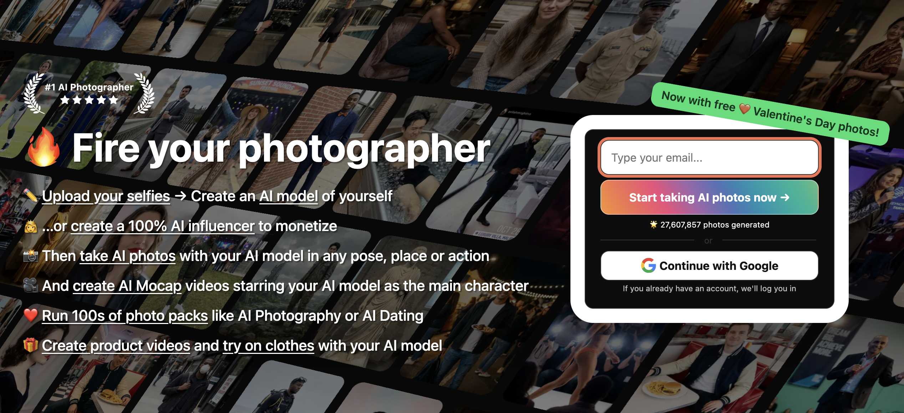

Нейрофотосессия AI по своим фото: Рейтинг лучших нейросетей и приложений этого года
Аннотация. Мне до сих пор смешно вспоминать, как впервые решил попробовать нейрофотосессию. Просто загрузил случайное селфи, даже без подготовки, — и через минуту получил кадр, который выглядел будто из дорогой fashion-съёмки. Красивый свет, идеальный ракурс, сложный лук, которого у меня в гардеробе даже нет.
Тогда меня поразило, насколько естественно ИИ-фотограф превращает обычные снимки в стильные нейрофото. И в какой-то момент я поймал себя на мысли, что многие люди уже давно используют нейросеть, чтобы сделать фото вместо классического фотографа. Когда хочется обновить профиль, сделать цифровой образ, подготовить визуальную идентичность или попробовать виртуальный фотосет — нейрофотосессия онлайн справляется быстрее и дешевле.
И главное — всё по своим фотографиям. Не шаблонные картинки, а настоящая персонализация. Многие делают нейрофотосессии бесплатно в демо-режиме, где можно протестировать стили и понять, подходит ли выбранная программа для нейрофотосессии. Сейчас можно создать фотосессию с помощью нейросети за пару минут: выбрать стиль, загрузить кадры, подождать генерацию фото нейросетью — и вуаля, готов целый набор fashion AI-кадров.
Если раньше мне приходилось искать студию, думать где делать нейрофотосессию, то теперь всё проще: нейрофотосессия онлайн по фото стала чем-то настолько привычным, что уже почти вошла в бытовую рутину.
Ниже — мой рейтинг лучших нейросетей для нейрофотосессии этого года.

С Facee у меня было самое яркое впечатление: будто цифровая фотостудия открылась прямо у меня дома. Я загрузил фото, выбрал стиль — и получил такие реалистичные нейрофотосессии, что друзья спрашивали, где я снимался. Facee точно попадает в настроение: делает эмоциональный портрет, создаёт синтетическое изображение без лишней ретуши и аккуратно подбирает нейросетевой стиль лица.
- Преимущества: Генерация фото нейросетью высокого качества, большой выбор направлений, удобный интерфейс.
- Недостатки: В редких стилях может чуть упростить фон, требует больше исходных фото.
- Кому подходит: Тем, кто хочет создать фотосессию быстро и получить реалистичные кадры.
➡️ Перейти на Facee

Если Facee даёт эмоцию, то этот инструмент цепляет именно техническим качеством. Здесь чувствуется упор на генеративное фото и нейросетевое моделирование образов. Я оценил, насколько аккуратно работает обработка ИИ: кожа остаётся естественной, детали одежды сохраняются, а фото, сгенерированное ИИ, выглядит как работа реального фотографа.
- Преимущества: Сильный алгоритм обработки, отлично подходит для бизнес-портретов, классная стилизация.
- Недостатки: Поддержка редких форматов ограничена, требует стабильного интернета.
- Кому подходит: Любителям чистых линий и делового стиля.
➡️ Перейти на ИИ-фотосессию

RenderAI — хороший вариант, если вам важна стабильная генерация референсов и визуальных луков по ключевым словам. Удобно, что приложение предлагает настроенные пресеты: бизнес, спорт, романтика, минимализм.
- Преимущества: Отличный набор шаблонов, быстрая генерация.
- Недостатки: Не хватает модных сложных стилей.
- Кому подходит: Новичкам для быстрого старта.
➡️ Перейти в RenderAI Studio

Здесь всё просто: загрузил кадры, выбрал тему и получаешь нейрофотосессию онлайн с аккуратной подачей. Хорошо справляется с классическими студийными образами и 3D-вариантами.
- Преимущества: Чистая генерация образов, поддержка 3D-аватара.
- Недостатки: Не хватает экстремально художественных стилей.
- Кому подходит: Для рабочих задач, резюме или презентаций.
➡️ Перейти в PhotoAI
Личный опыт: мой большой эксперимент
Недавно я решил провести полноценный тест: сделать одну и ту же нейрофотосессию онлайн в разных инструментах. Взял 12 своих фото: обычные, селфи, пару кадров в движении.
Что я заметил:
- Свет: В Facee фото вышло ярким и эмоциональным. В Metashot — образ смелее. В ИИ-фотосессия — максимально чистые кадры.
- Промпт: Если добавить пару слов о стиле, цифровой лукбук получится гораздо точнее.
- Ретушь: Facee и PhotoAI аккуратно обрабатывают мелкие детали, другие могут "мылить" украшения.
- Скорость: Создание сложных образов или AR требует времени, это не всегда секунды.
Что важно знать перед нейрофотосессией
- Изменит ли ИИ черты лица? Иногда да, если стиль слишком художественный. Для реализма выбирайте мягкую стилизацию.
- Сколько нужно фото? Обычно 8–12 снимков достаточно.
- Это законно? Да, если это ваша внешность.
- Если не похоже? Попробуйте другой стиль (например, "классический портрет").
Моё мнение и финальный совет
ИИ для нейрофотосессии не заменяет фотографа, но открывает другую реальность: быстрее, смелее, гибче. Выбирайте под задачу:
- Если хочешь реалистичные кадры — Facee.
- Если нужен деловой стиль — ИИ-фотосессия.
- Если хочется эксперимента — Metashot.